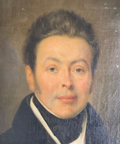

Philippe François Joseph SAINT-LÉGER — Né le 05/02/1787 à Lille — Décédé le 30/12/1861 à Lille
Philippe François Joseph SAINT-LÉGER
Né le 05/02/1787 à Lille
Décédé le 30/12/1861 à Lille
Résumé
Philippe François Joseph Saint-Léger naît le 5 février 1787 à Lille, fils de Pierre-Joseph Saint-Léger, marchand de charbon originaire de Caucourt dans le Pas-de-Calais, et d'Ursule Henriette Verdier, native d'Annapes. Il grandit à Lille dans un milieu artisan modeste mais ambitieux, et s'élèvera au rang de manufacturier et d'homme politique influent.
Il dirige et reprend l'usine de filature du 32 rue des Tours à Lille, établissement fondé vers 1800 qui restera dans la famille Saint-Léger pendant plusieurs générations — son petit-fils André et son fils aîné Pierre la vendront au Mont-de-Piété avant de la remplacer par une filature de lin moderne à La Madeleine. Parallèlement à ses affaires, il s'engage avec ferveur dans la vie politique libérale de son temps. Républicain convaincu et adversaire résolu de la monarchie, il fréquente les grandes figures réformatrices de son époque — Chateaubriand, Thiers, le général Cavaignac. Il crée et préside les banquets de la Réforme à Lille dans les années 1830, ces grandes réunions politiques qui alimentent l'opposition à la monarchie et contribuent à préparer les événements de 1830. Son petit-fils André Saint-Léger, dans ses mémoires rédigés en 1947, souligne qu'il était réputé très instruit et aurait même écrit des ouvrages sur ses idées de liberté. Il habite et travaille dans son usine, au 32 rue des Tours, adresse qui sera celle de la famille pendant plus d'un demi-siècle. Il décède le 30 décembre 1861 à Lille et est enterré au cimetière de la Madeleine.
De son union naît notamment Victor Edouard Philippe Saint-Léger (1818–1872), vice-président du Conseil Général du Nord et colonel de la Garde nationale, qui perpétuera l'engagement civique de la lignée.
Sources :
- données familiales (gedcom)
- Mémoires de Philippe Saint-Léger
- Mémoires d'André Saint-Léger, lettre du 20 août 1947
{kind=link}

📷 Cliquez pour voir 1 photo(s)
Arbre généalogique
26/11/1756 — 1813
Ursule VERDIER
01/09/1757 — 09/02/1841
Victor SAINT-LÉGER (13/04/1818 — 20/01/1872)
Octavie SAINT-LÉGER (28/07/1821 — 1872)
Pauline SAINT-LÉGER ( — 07/06/1896)